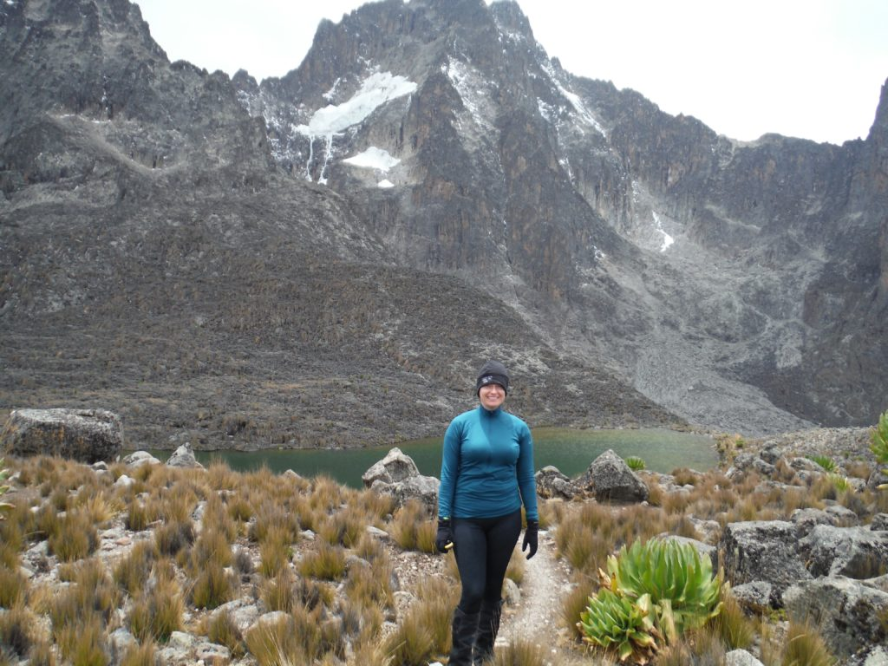

 |
REBECCA HORE | |
| PERSONAL STATEMENT
A final year Biology student with an interest in Ecology, Biodiversity and Science Communication. Seeking a research-oriented role to develop new skills and build upon exisitng ones after graduation. |
||
|
WORK EXPERIENCEOffice Assistant - Department Store
Retail Sales Assistant - Nursery
|
|
|
PROJECTSSummer Undergraduate Research Program 2020 - Maynooth University (Geography Department)Completed a research project under the supervision of Dr H. Shaw entitled: "Investigating the Occurrences of Herbaceus Species in Ireland During the Holocene. Involved collection and recording of data from scientific literature. Academic Poster highly commended by judges at symposium. SPUR Profile here.3rd Year Dissertation - "Bioadhesives of Marine Species Inhabiting the Intertidal Zone"Researched relevant scientific literature and composed a scientific review of the topic. Awarded a 1.1 grade by supervisor. |
|